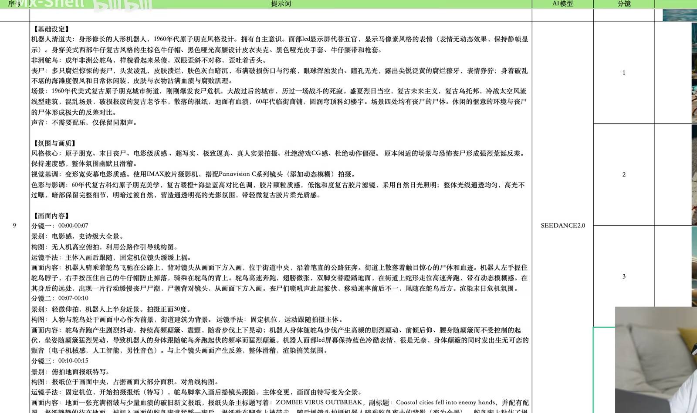

METHOD / PROMPT STRUCTURE
提示词的三层结构
分别回答：是什么、像什么、怎么发生
01
基础设定
WHAT EXISTS
时间、地点、人物与参考图中的关键关系。
02
质感 / 画面语言
HOW IT FEELS
风格、影调、景别、构图与运镜边界。
03
具体画面内容
WHAT HAPPENS
动作因为什么发生，最后希望得到什么结果。

SOURCE FRAME · 00:45
模型需要理解画面关系，创作者需要先把判断写出来。
CASE 13 · 00:00:45
render_mode: object
03 / 10